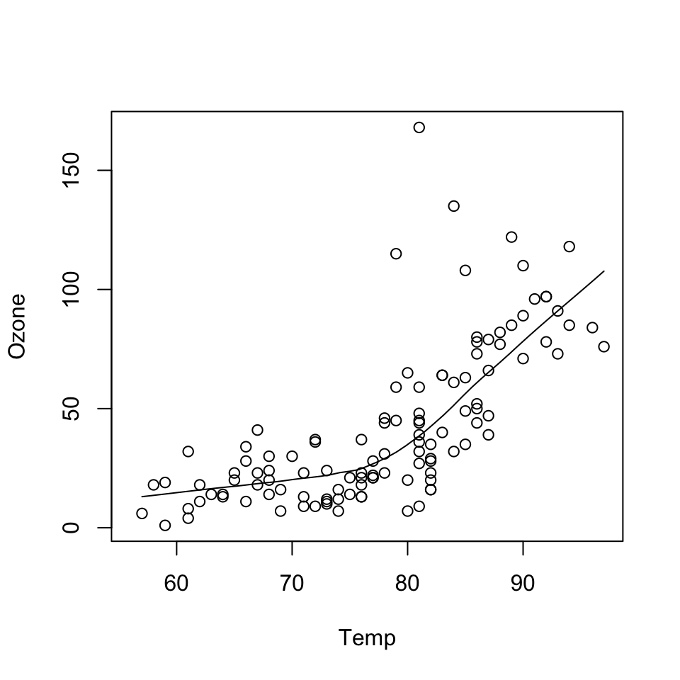
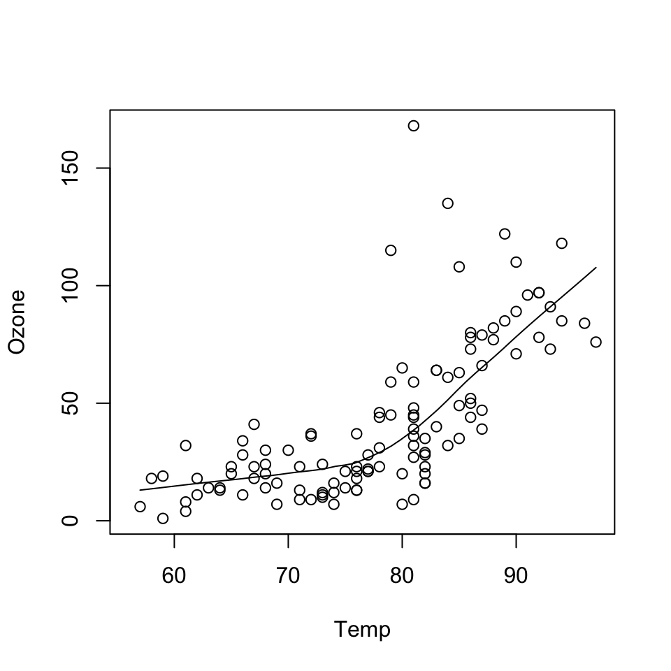

data(airquality)
with(airquality, {
plot(Temp, Ozone)
lines(loess.smooth(Temp, Ozone))
})
This lecture, as the rest of the course, is adapted from the version Stephanie C. Hicks designed and maintained in 2021 and 2022. Check the recent changes to this file through the GitHub history.
The data may not contain the answer. And, if you torture the data long enough, it will tell you anything. —John W. Tukey
Before class, you can prepare by reading the following materials:
I also highlighted these two free online books:
Material for this lecture was borrowed and adopted from
At the end of this lesson you will:
There are three different plotting systems in R and they each have different characteristics and modes of operation.
The three systems are
This course will focus primarily on the ggplot2 plotting system. The other two systems are presented for context.
The base plotting system is the original plotting system for R. The basic model is sometimes referred to as the “artist’s palette” model.
The idea is you start with blank canvas and build up from there.
In more R-specific terms, you typically start with plot() function (or similar plot creating function) to initiate a plot and then annotate the plot with various annotation functions (text, lines, points, axis)
The base plotting system is often the most convenient plotting system to use because it mirrors how we sometimes think of building plots and analyzing data.
If we do not have a completely well-formed idea of how we want to look at some data, often we will start by “throwing some data on the page” and then slowly add more information to it as our thought process evolves.
We might look at a simple scatterplot and then decide to add a linear regression line or a smoother to it to highlight the trends.
data(airquality)
with(airquality, {
plot(Temp, Ozone)
lines(loess.smooth(Temp, Ozone))
})
In the code above:
plot() function creates the initial plot and draws the points (circles) on the canvas.lines function is used to annotate or add to the plot (in this case it adds a loess smoother to the scatterplot).Next, we use the plot() function to draw the points on the scatterplot and then use the main argument to add a main title to the plot.
data(airquality)
with(airquality, {
plot(Temp, Ozone, main = "my plot")
lines(loess.smooth(Temp, Ozone))
})
One downside with constructing base plots is that you cannot go backwards once the plot has started.
It is possible that you could start down the road of constructing a plot and realize later (when it is too late) that you do not have enough room to add a y-axis label or something like that
If you have specific plot in mind, there is then a need to plan in advance to make sure, for example, that you have set your margins to be the right size to fit all of the annotations that you may want to include.
While the base plotting system is nice in that it gives you the flexibility to specify these kinds of details to painstaking accuracy, sometimes it would be nice if the system could just figure it out for you.
Another downside of the base plotting system is that it is difficult to describe or translate a plot to others because there is no clear graphical language or grammar that can be used to communicate what you have done.
The only real way to describe what you have done in a base plot is to just list the series of commands/functions that you have executed, which is not a particularly compact way of communicating things.
This is one problem that the ggplot2 package attempts to address.
Another typical base plot is constructed with the following code.
data(cars)
## Create the plot / draw canvas
with(cars, plot(speed, dist))
## Add annotation
title("Speed vs. Stopping distance")
We will go into more detail on what these functions do in later lessons.
The lattice plotting system is implemented in the lattice R package which comes with every installation of R (although it is not loaded by default).
To use the lattice plotting functions, you must first load the lattice package with the library function.
library(lattice)With the lattice system, plots are created with a single function call, such as xyplot() or bwplot().
There is no real distinction between functions that create or initiate plots and functions that annotate plots because it all happens at once.
Lattice plots tend to be most useful for conditioning types of plots, i.e. looking at how y changes with x across levels of z.
Another aspect of lattice that makes it different from base plotting is that things like margins and spacing are set automatically.
This is possible because entire plot is specified at once via a single function call, so all of the available information needed to figure out the spacing and margins is already there.
Here is a lattice plot that looks at the relationship between life expectancy and income and how that relationship varies by region in the United States.
state <- data.frame(state.x77, region = state.region)
xyplot(Life.Exp ~ Income | region, data = state, layout = c(4, 1))
You can see that the entire plot was generated by the call to xyplot() and all of the data for the plot were stored in the state data frame.
The plot itself contains four panels—one for each region—and within each panel is a scatterplot of life expectancy and income.
The notion of panels comes up a lot with lattice plots because you typically have many panels in a lattice plot (each panel typically represents a condition, like “region”).
Downsides with the lattice system
The ggplot2 plotting system attempts to split the difference between base and lattice in a number of ways.
Taking cues from lattice, the ggplot2 system automatically deals with spacings, text, titles but also allows you to annotate by “adding” to a plot.
The ggplot2 system is implemented in the ggplot2 package (part of the tidyverse package), which is available from CRAN (it does not come with R).
You can install it from CRAN via
install.packages("ggplot2")and then load it into R via the library() function.
library(ggplot2)Superficially, the ggplot2 functions are similar to lattice, but the system is generally easier and more intuitive to use.
The defaults used in ggplot2 make many choices for you, but you can still customize plots to your heart’s desire.
A typical plot with the ggplot2 package looks as follows.
library(tidyverse)
data(mpg)
mpg %>%
ggplot(aes(displ, hwy)) +
geom_point()There are additional functions in ggplot2 that allow you to make arbitrarily sophisticated plots.
We will discuss more about this in the next lecture.
options(width = 120)
sessioninfo::session_info()─ Session info ───────────────────────────────────────────────────────────────────────────────────────────────────────
setting value
version R version 4.3.1 (2023-06-16)
os macOS Ventura 13.5
system aarch64, darwin20
ui X11
language (EN)
collate en_US.UTF-8
ctype en_US.UTF-8
tz America/New_York
date 2023-09-12
pandoc 3.1.5 @ /opt/homebrew/bin/ (via rmarkdown)
─ Packages ───────────────────────────────────────────────────────────────────────────────────────────────────────────
package * version date (UTC) lib source
cli 3.6.1 2023-03-23 [1] CRAN (R 4.3.0)
colorout 1.2-2 2023-05-06 [1] Github (jalvesaq/colorout@79931fd)
colorspace 2.1-0 2023-01-23 [1] CRAN (R 4.3.0)
digest 0.6.33 2023-07-07 [1] CRAN (R 4.3.0)
dplyr * 1.1.3 2023-09-03 [1] CRAN (R 4.3.0)
evaluate 0.21 2023-05-05 [1] CRAN (R 4.3.0)
fansi 1.0.4 2023-01-22 [1] CRAN (R 4.3.0)
farver 2.1.1 2022-07-06 [1] CRAN (R 4.3.0)
fastmap 1.1.1 2023-02-24 [1] CRAN (R 4.3.0)
forcats * 1.0.0 2023-01-29 [1] CRAN (R 4.3.0)
generics 0.1.3 2022-07-05 [1] CRAN (R 4.3.0)
ggplot2 * 3.4.3 2023-08-14 [1] CRAN (R 4.3.0)
glue 1.6.2 2022-02-24 [1] CRAN (R 4.3.0)
gtable 0.3.4 2023-08-21 [1] CRAN (R 4.3.0)
hms 1.1.3 2023-03-21 [1] CRAN (R 4.3.0)
htmltools 0.5.6 2023-08-10 [1] CRAN (R 4.3.0)
htmlwidgets 1.6.2 2023-03-17 [1] CRAN (R 4.3.0)
jsonlite 1.8.7 2023-06-29 [1] CRAN (R 4.3.0)
knitr 1.43 2023-05-25 [1] CRAN (R 4.3.0)
labeling 0.4.3 2023-08-29 [1] CRAN (R 4.3.0)
lattice * 0.21-8 2023-04-05 [1] CRAN (R 4.3.1)
lifecycle 1.0.3 2022-10-07 [1] CRAN (R 4.3.0)
lubridate * 1.9.2 2023-02-10 [1] CRAN (R 4.3.0)
magrittr 2.0.3 2022-03-30 [1] CRAN (R 4.3.0)
munsell 0.5.0 2018-06-12 [1] CRAN (R 4.3.0)
pillar 1.9.0 2023-03-22 [1] CRAN (R 4.3.0)
pkgconfig 2.0.3 2019-09-22 [1] CRAN (R 4.3.0)
purrr * 1.0.2 2023-08-10 [1] CRAN (R 4.3.0)
R6 2.5.1 2021-08-19 [1] CRAN (R 4.3.0)
readr * 2.1.4 2023-02-10 [1] CRAN (R 4.3.0)
rlang 1.1.1 2023-04-28 [1] CRAN (R 4.3.0)
rmarkdown 2.24 2023-08-14 [1] CRAN (R 4.3.1)
rstudioapi 0.15.0 2023-07-07 [1] CRAN (R 4.3.0)
scales 1.2.1 2022-08-20 [1] CRAN (R 4.3.0)
sessioninfo 1.2.2 2021-12-06 [1] CRAN (R 4.3.0)
stringi 1.7.12 2023-01-11 [1] CRAN (R 4.3.0)
stringr * 1.5.0 2022-12-02 [1] CRAN (R 4.3.0)
tibble * 3.2.1 2023-03-20 [1] CRAN (R 4.3.0)
tidyr * 1.3.0 2023-01-24 [1] CRAN (R 4.3.0)
tidyselect 1.2.0 2022-10-10 [1] CRAN (R 4.3.0)
tidyverse * 2.0.0 2023-02-22 [1] CRAN (R 4.3.0)
timechange 0.2.0 2023-01-11 [1] CRAN (R 4.3.0)
tzdb 0.4.0 2023-05-12 [1] CRAN (R 4.3.0)
utf8 1.2.3 2023-01-31 [1] CRAN (R 4.3.0)
vctrs 0.6.3 2023-06-14 [1] CRAN (R 4.3.0)
withr 2.5.0 2022-03-03 [1] CRAN (R 4.3.0)
xfun 0.40 2023-08-09 [1] CRAN (R 4.3.0)
yaml 2.3.7 2023-01-23 [1] CRAN (R 4.3.0)
[1] /Library/Frameworks/R.framework/Versions/4.3-arm64/Resources/library
──────────────────────────────────────────────────────────────────────────────────────────────────────────────────────